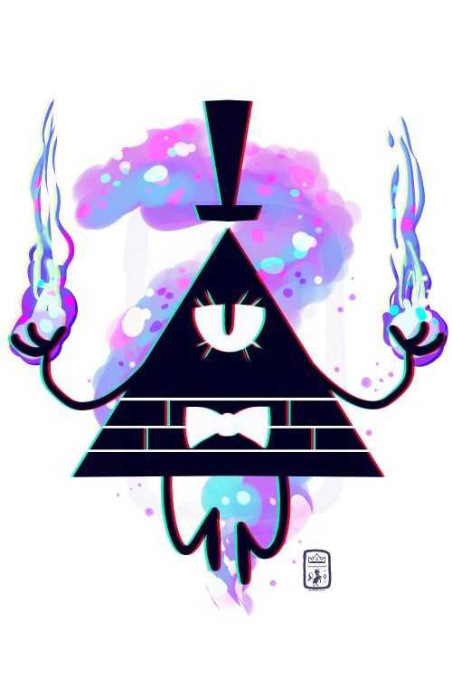

.jpg)
Introducción
Bill Clave es un demonio capaz de entrar en la mente y tomar el cuerpo de una persona, dejando la mente del poseído en el "Escape Mental", como si se tratare de un fantasma. Puede ser invocado utilizando un encantamiento que se encuentra en el Diario 2

Apariencia
Bill está basado en el Ojo de la Providencia, poseyendo un "exoesqueleto" (que lo cubre por fuera), con la apariencia de un triangulo amarillo fluorescente, tiene un ojo grande parecido al de un felino y con pestañas, en la parte inferior de su cabeza tiene unos rasgos ladrillados. Se mueve flotando y rara vez usa sus pies. Tiene unas piernas y manos negras, un sombrero de copa de color negro y una pajarita. También tiene un bastón (que casi nunca usa).
.jpg)
Historia
El origen de Bill es desconocido. Él vivía en la "segunda dimensión", pero al ver sus poderes, destruyó su dimensión, a lo que él llamó liberar, lo que incluyó asesinar a su familia. Transformó ese lugar en el Reino de las Pesadillas.
Bill es un peligro para los universos, ya que su locura es incontenible, y su poder va más allá que el de cualquier ser. Una vez que su locura fue instaurada en un lugar, ese lugar comienza a destruirse por la falta de leyes, lo que obliga a Bill a buscar otro lugar donde quedarse, y por esto se vio obligado a obtener otro lugar donde vivir. Bill eligió a los humanos. Contactó con las nativos de Gravity Falls, Oregón.
.jpg)
Poderes - Habilidades
Bill posee habilidades muy poderosas como entrar y manipular las mentes de los seres vivos, y además de mentes, Bill puede manipular la realidad, el tiempo y la materia a su antojo, lanza rayos destructores, detiene o viaja en el tiempo y puede cambiar de forma. Sus rayos destructivos son tan fuertes que pudieron matar al Bebé del Tiempo y a sus guardias, puede poseer personas y/o cosas y puede volar, razón por la cual no usa mucho sus pies. Sabe tocar el piano y tiene una fuerza abrumadora, suficiente como para matar a una persona arrancándole molécula a molécula a la vez con solo sus manos.
Es muy bueno engañando a las personas para que cumplan sus propósitos, los cuales son principalmente encontrar un lugar nuevo para vivir, pues el Reino de las Pesadillas, su hogar, se iba a destruir.
